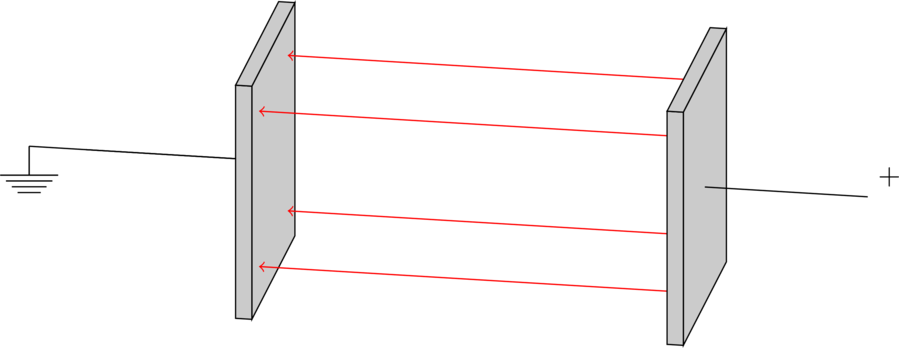
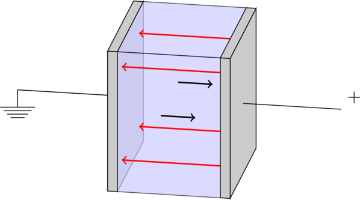
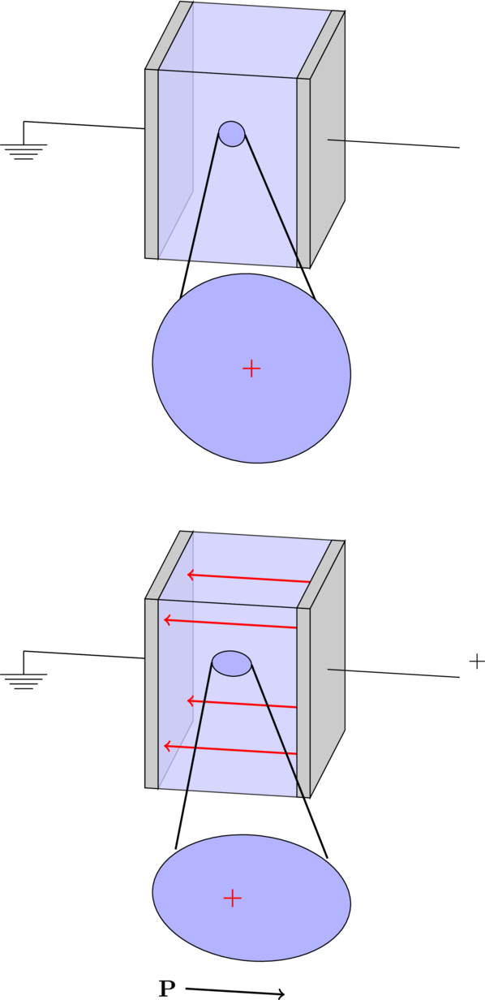
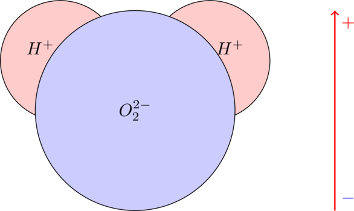
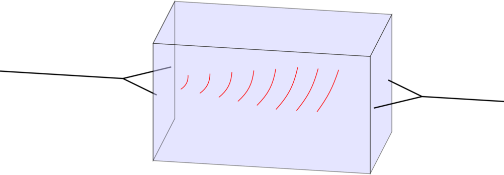
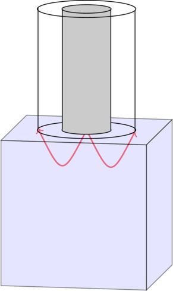
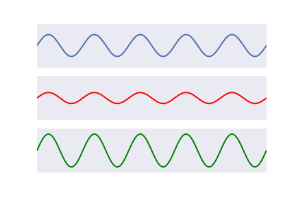

motivation¶
Here some basic introductory notes are given informally. The experienced reader can safely skip this section.
what are dielectric properties?¶
First, a seemingly unrelated question: How can light travel in the vacuum of the universe? The answer lies both in the underlying form of electromagnetic waves, and also in the fabric of the universe itself. Electromagnetic waves — everything from radio waves to visible light to gamma rays — consists of oscillating electric and magnetic fields. These fields are defined by their effect on charged particles: the electric field causes some force on charged particles, and the magnetic field causes some force on moving charged particles. Perhaps even more fundamental than Maxwell’s equations, this is shown by the Lorentz force:
$$ \vec{F} = q(\vec{v} \times \vec{B} + \vec{E}) $$
This equation simply describes the definition of the \(\vec{E}\) and \(\vec{B}\) fields. Charge \(q\) is a fundamental property of matter.
As with all waves, electromagnetic waves need a medium to travel in. Sound can only travel in the medium of air, water waves of course need water, and the “wave” at a hockey game needs a crowd. So how is it that light from a distant galaxy can reach the Earth? How can we use radio waves to communicate to satellites in our solar system (and beyond)?
The strange nature of our universe is that the “emptiness” of free space isn’t really empty, but it can actually store and transmit these fields. This is reprented by the fundamental dielectric properties: the permittivity and permeability of free space, represented by \(\epsilon_0\) and \(\mu_0\), respectively. Strangely enough, it seems that these properties are innate in our universe. Might there be another universe out there somewhere without them? Or might the edge of our own universe be defined as where these properties “end”?
Let’s take another example, this time with static instead of time varying fields. Consider a simple parallel plate capacitor.
When we charge the plates, say by connecting them to a battery, there is an accumulation of equal and opposite charge on each of the two plates. But how does each plate “know” of the presence of the other plate? It is the same electric field which carries this “charge force” from one plate to another, and the medium that it travels in is the same permittivity of free space that electromagnetic waves interact with. The electric field and associated properties, as described in this example, will be the focus of the remainder of the documentation.
the origin of dielectric properties in materials¶
The electric field is defined by the force it exerts on charged particles. It is important to consider that most materials we consider to be electrically neutral are not actually neutral at the microscopic scale. In fact, the fundamental building blocks of the universe are, for the most part, electrically charged. Protons and electrons are equally and oppositely charged (and neutrons consist of charged quarks which cancel out). So it is conceivable that even in electrically neutral materials, there will be some interaction with the electric field.
Consider again the familiar parallel plate capacitor. What happens when we stick some material between the charged plates? The electric field causes the positive charges of the material to feel some force away from the positive plate, and the negative charges to feel a force towards it. If these charges can move to any extent, the result is that another field is generated inside the material due to their charge separation. This is referred to as its polarization, and it points in the direction opposite to the original applied field.
This can be explained by looking more closely at how the material’s particles interact with the applied field. For instance, consider how neutral atoms would respond to the applied field:

So, given an applied field, there will be some resulting polarization field in the opposite direction. The ability of these charged particles to move or rotate is related to what we call its electric susceptibility. Depending on the nature of this charge separation, there are several timescales which this can occur at. Considering atoms are surrounded by electron clouds, this is an obvious interaction which exists in nearly all materials as shown above. This shift of electrons relative to the nuclues is called electronic (or optical) polarization, and happens nearly instantaneously.
Similar shifts of charged particles can occur in molecules. Certain molecules — like water — already have a dipole moment before any electric field is applied. However, the molecules are each somewhat randomly oriented, and so the net field cancels out in neutral water. When an electric field is applied, these dipoles on average align against the external field. Due to molecular interactions, there is a specific time scale that this happens. This is called the relaxation time.
how do we characterize dielectric properties?¶
Given the time scale of the rotations and movements of charged particles which lead to permittivity, there are several ways we can model this. Perhaps the simplest of these is the Debye model.
While analysis is often done in the frequency domain, time domain characterization employs some telling features of dielectric materials. A useful tool to this end is the susceptibility kernel — describing the constitutive relation between the electric flux density and the electric field as:
In the time domain, the constitutive relation (between electric flux density and electric field) can be represented by:
where \(\chi(r,t)\) represents the susceptibility kernel. The temporal convolution:
describes the dispersive nature of the material. For instance, for Debye models the susceptibility kernel is:
where \(H(t)\) is the Heaviside unit step function to ensure causality, and \(\beta \tau = \epsilon_s - \epsilon_\infty\).
why estimate dielectric properties?¶
Any device which uses electric or magnetic fields interacts with dielectric properties of the materials in or around it. For instance, cell phone cases, circuit board substrate, and engineering iron rings. These are what one could call “manufacturing” reasons for knowing the dielectric properties; we want to know how are devices will function given the properties of its composition.
Alternatively, dielectric properties can be used to learn things about other materials. We can take advantage of the fact that certain substances have higher properties than others, and use this as a contract mechanism to determine the relative proportions. For instance, water has very high permittivity compared to most other biological content. One common application of this is looking at the moisture content of soil or crops: if the dielectric properties are high, we can infer that there must be a high water content. One could call this “exploratory” reasons for estimating dielectric properties.
Certain materials’ properties are highly frequency dependent due to their chemical composition. An even more specific analysis of the material can be done by exploiting this frequency response. For instance, say two substances which could exist in crops both have high permittivity. The shape and amplitude of the dielectric properties as a function of frequency might tell us the proportions between the two. This is most commonly done at infrared frequencies, since this is where most of these chemical “fingerprints” are highlighted due to their characteristic molecular resonances.
An emerging application — and the one we are exploring in this toolbox — is the use of dielectric properties in biomedical applications. Similarly to the crop example, the permittivity of human tissues tends to be dominated by water content. Tissues with high water content such as blood and muscle tend to have much higher permittivity than those such as fat and bone. It was suggested in the late ‘90s that tumorous tissues have high permittivity due to greater water content than surrounding tissues. This contrast was then exploited through microwave imaging, where the objective was to noninvasively determine their presence and location.
This general sensitivity to water content has been proposed for several other imaging and sensing applications, such as detecting fluid accumulation in lungs, monitoring bone health, and classifying strokes as ischemic or hemorragic. Our group has recently been investigating the use of dielectric contrast for human hydration monitoring. Applications such as these will be kept in mind as we go along.
how are dielectric properties measured?¶
The answer generally depends on the frequency of operation. At relatively low frequencies (< 10 MHz), the simplest way to do this is to use a simple device: a capacitor. Assuming we can properly shape the material into a planar slab, if we place it between two metal plates with known dimensions, by measuring the capacitance of the material we can determine the complex permittivity. The trouble with this method is when the frequency is high enough that there is some phase change across the electrodes or the sample. Rather than electrostatic models, this would then require time-varying and radiating models.

In fact, a fundamental shift happens at a certain point. Consider the direction of the electric field. It was first pointing from one capacitor to the other, but in a radiating field it is actually pointing in a transverse direction.
This means that at radio frequencies and above, different methods need to be adopted. A common method — particularly for biomedical applications — is the open-ended coaxial probe. The probe – typically with a diameter of a few mm – is placed directly in contact with the material. Upon applying a RF signal to the probe, some amount of the signal will be reflect at the probe-material interface. The magnitude and phase of this reflection are telling of the dielectric properties of the material.
Despite its wide use, there are several limitations of using the probe. First, it has a very shallow sensing depth. This is generally considered to be about 3 mm. Clearly, for in vivo tissue assessment, the probe can only be used for surfaces such as the skin and tongue. Secondly, it can be difficult to achieve proper contact with tissues, particularly firm ones such as bone. Any slight air gap within the shallow sensing volume of the probe can greatly influence property estimation. Finally, in heterogeneous tissues, it can be unclear which component of the tissue one is measuring, and whether any mixing phenomena occur. This can be an issue for tissues such as bone marrow and mineral compositions.
Our group has developed methods using 2-port antenna measurements to overcome these limitations. This involves placing a tissue in contact with antennas on either side of it, and measuring the reflected and transmitted signals. From these measurements, we have developed methods to estimate the permittivity and conductivity from 3-8 GHz. These methods rely on removing the influence of the antennas in our measurements, to isolate the response of the tisuse. Dielectric properties can then be analytically solved for. The method has been validated in homogeneous tissue-mimicking mixtures ranging from 3-5 cm. However, some challenges are known to arise in more complex tissue geometries. For instance, simulations in the heel show effects such as multipath, partial reflections, and radial spreading. These effects are very difficult to model analytically, making them challenging to account for in our current technique. This has lead us to approach other methods of property estimation from these antenna measurements.
why do this using machine learning?¶
Machine learning has the modern world abuzz. Many claim that it will provide solutions to all of our problems, and young energetic engineers and scientists are flocking to San Francisco with the hopes of achieving a lifetime’s fortune and fame. This isn’t so different from the Gold Rush of the 19th century, or the Dot Com craze of the late 20th century. Will this boom also result in a bust?
This question extends beyond this Python package, but I will use it as a reason to better justify why we need machine learning. Machines are fundamentally good at certain things — in particular, processing large amounts of data. Humans are fundamentally good at other things — namely, making judgements and “sensing” what an answer may be without consciously knowing why. Together, humans and machines may be able to achieve a lot.
This project aims to exploit machines’ ability to find patterns in large amounts of data, and use that to our advantage to estimate these dielectric properties. Previous methods of dielectric property estimation are analytic. That is, they rely on equations (either empirical or fundamental) to uniquely solve for the dielectric properties. While this works well for simple cases (e.g. homogeneous slabs of material with proper measurement equipment), many of these assumptions can break down in the case of complex tissue compositions in the human body. Effects such as multipath, radial spreading, and antenna coupling can have very complex influence over our measurements. Rather than trying to develop many complex equations to model these effects, we use two simple equations: Maxwell’s curl equations:
By iteratively solving these equations in the time domain, we can simulate to a high degree of accuracy how electromagnetic waves interact with materials. The method we used is called Finite Difference Time Domain, using the Sim4Life software package. By simulating a large variety of tissue types, we aim to “learn” a model of how the resulting reflected and transmitted signals vary with dielectric properties and geometry. This will allow us to create a model where the dielectric properties can be estimated from recorded signals.
Let’s get going!
